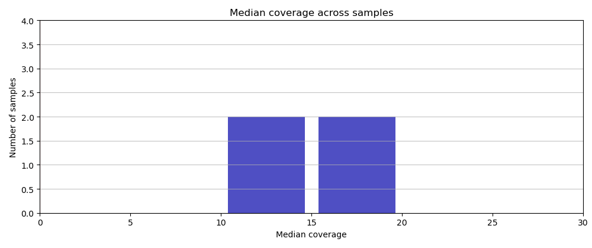
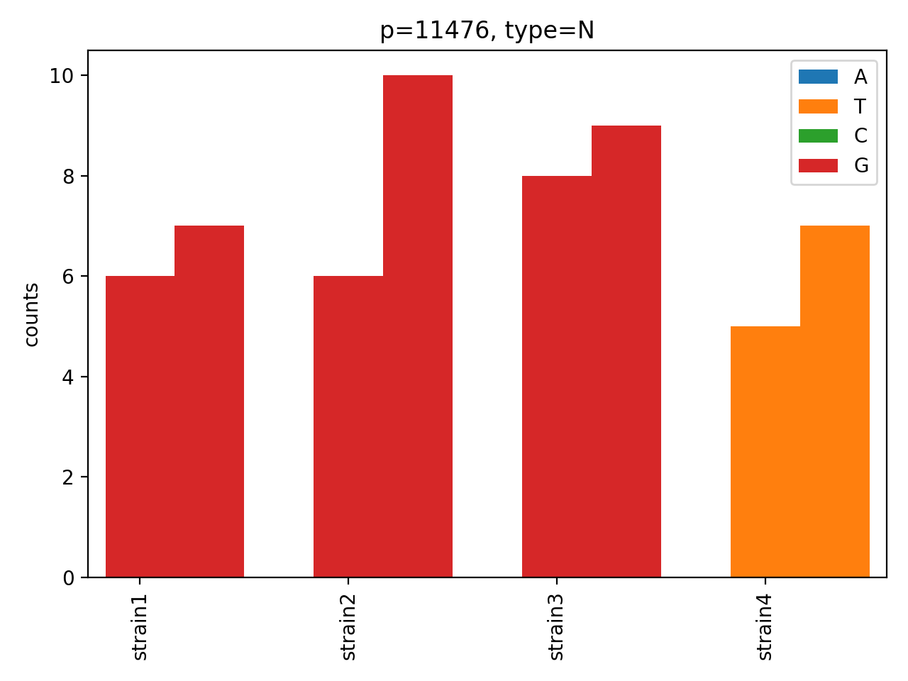
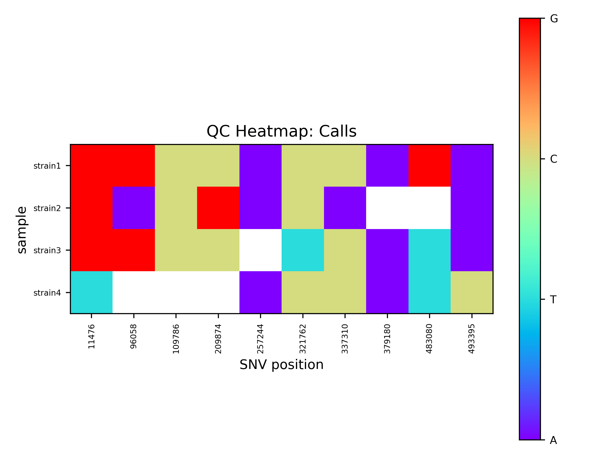
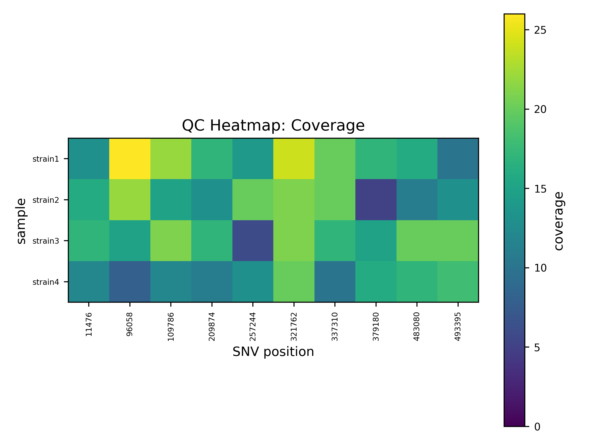

Output files
Everything a run produces, and which files you actually need. The six per-group files sit at the top level of the output directory; everything behind them is under the three numbered directories.
The directory
my_output/
├── group_pe_test_snv_table_final.tsv ← start here
├── group_pe_test_snv_table_unfiltered.tsv
├── group_pe_test_snv_dashboard.html ← and here
├── group_pe_test_snv_tree_final.nwk.tree
├── group_pe_test_snv_table_invariant_positions.tsv
├── group_pe_test_snv_table_rejected_upstream.tsv
├── samples.csv
├── accusnv.log
├── accusnv.full.log
├── accusnv.snakemake.log
├── configs/
│ ├── config.yaml
│ └── pipeline.yaml
├── logs/ one .log and .full.log per job
├── 1-Mapping/
│ ├── alignment/ BAMs, indexes, duplicate stats
│ │ └── trimmed_filtered_reads/ trimmed and quality-filtered FASTQs
│ ├── vcf/ per-sample VCFs and upstream-reject tables
│ ├── quals/ per-sample call-quality vectors and candidate positions
│ └── diversity/ per-sample read-count and coverage matrices
├── 2-SNV-filtering/
│ ├── raw_tables/
│ │ ├── group_pe_test_candidate_mutation_table.npz
│ │ ├── group_pe_test_coverage_matrix_raw.npz
│ │ ├── group_pe_test_coverage_matrix_norm.npz
│ │ └── group_pe_test_allpositions.pickle
│ └── group_pe_test/
│ ├── snv_table_final.tsv
│ ├── snv_table_unfiltered.tsv
│ ├── snv_table_cnn_raw.tsv
│ ├── snv_table_invariant_positions.tsv
│ ├── candidate_mutation_table_final.npz
│ ├── snvs_per_sample.tsv
│ ├── snvs_per_sample.png
│ ├── snvs_histogram_per_sample.png
│ ├── ZOOMED_snvs_histogram_per_sample.png
│ ├── snvs_from_recombo.csv (only if something was flagged)
│ ├── snv_filter_recombo.png
│ ├── snv_filter_sample_coverage_hist.png
│ ├── snv_filter_sample_toomanyNs_hist.png
│ ├── snv_table_filtered_tmp.tsv
│ └── _snv_state.npz
└── 3-Analysis/
└── group_pe_test/
├── snv_dashboard.html
├── dNdS_out/
│ ├── data_dNdS.npz
│ ├── dnds_genomewide.tsv
│ └── dnds_per_gene.tsv
├── phylogeny/
│ ├── snv_tree_final.nwk.tree
│ ├── snv_table_tree_distances.tsv
│ ├── snv_table_simple_stats.tsv
│ ├── alignment.fa
│ ├── alignment.phylip
│ ├── tree.nexus
│ ├── dnapars.log
│ ├── dnapars_options.txt
│ ├── dnapars_report.txt
│ ├── snvChart.csv (only with --build_snv_trees)
│ └── snv_trees/ (only with --build_snv_trees)
├── diagnostic_figures/
│ ├── snv_qc_heatmap_calls.png
│ ├── snv_qc_heatmap_coverage.png
│ └── snv_qc_heatmap_quals.png
└── per_snv_barcharts/
├── p_11476_bar_chart.png
└── ...
With more than one group in the sample sheet, the six top-level files appear once per group, and
2-SNV-filtering/ and 3-Analysis/ get one subdirectory per group.
samples.csv is the sample sheet you passed with -i, rewritten with the FASTQ and reference
paths AccuSNV resolved for each sample. It is what the workflow actually read, so it is the file
to check when a sample was mapped against something you did not expect.
With use_nj_tree: true the four dnapars* and alignment.phylip files are absent, since
dnapars never runs.
The results
File |
What it is |
|---|---|
|
The SNV calls, fully annotated. One row per position, one column per sample, plus the gene, the amino-acid change and every filter verdict. See The final SNV table. |
|
Every candidate position, the read counts behind it, the gene and protein sequence, and the tree, in one offline page. See The interactive report. |
|
The same table with the rejected candidates included, so you can see what was dropped and by which check. |
|
The maximum-parsimony tree in Newick. See Phylogeny and dMRCA. |
|
Candidate positions where every ingroup sample agrees. They differ from the reference genome but not from each other, so they are not SNVs and are kept out of the SNV tables. |
|
Positions |
Each of these is a copy, except the last. The SNV tables and the invariant positions are also in
2-SNV-filtering/group_<group>/, the dashboard in 3-Analysis/group_<group>/, and the tree in
3-Analysis/group_<group>/phylogeny/.
Positions that never reached the SNV tables
Two of the six files exist so that positions dropped before any SNV call have somewhere to be looked at. Neither is needed for a normal run; both matter when a SNV you expected is missing.
snv_table_invariant_positions.tsvColumns
genome_pos,contig,contig_pos,ingroup_allele,reference_alleleandsamples_called. Mapping a group against a reference from outside it puts tens of thousands of rows here, and that is normal: they are the fixed differences between your isolates and the reference, not differences between the isolates. The count is inaccusnv.log.snv_table_rejected_upstream.tsvOne row per sample per position, with the
bcftoolsevidence (qual,DP4,FQ,genotype) and aremoved_byvalue of eithervariant_min_aformax_fq, naming which of the two mapping-stage gates dropped it. This is the only place those removals are visible, because such a position never becomes a candidate and so has no row in any SNV table. Look here when a SNV you were expecting is in neithersnv_table_final.tsvnorsnv_table_unfiltered.tsv. It is not rebuilt by--downstream_only, which does not touch the mapping-stage VCFs.
The calling stage
Everything in 2-SNV-filtering/group_<group>/.
File |
What it is |
|---|---|
|
The network’s raw output: |
|
The machine-readable final result: sample names, positions, the 8 read counts per sample per position, call qualities, outgroup flags, indel counts, and the |
|
Rough per-sample SNV count, computed before filtering. Two columns: |
|
The candidate positions the whole ingroup agrees on, described above. |
|
The |
|
The filter verdicts before annotation merges them in. Kept so that |
|
The internal hand-off between stages: read counts, qualities, filtered calls, the inferred ancestor, the recombination mask. The dashboard and the tree builder read it. Do not edit it. |
QC figures from the calling stage
snvs_per_sample.pngThe rough per-sample count as a scatter plot. Sample names are shown for up to 20 samples; above that the axis is left blank and any sample with more than 1000 SNVs is labelled in red.
snvs_histogram_per_sample.pngandZOOMED_snvs_histogram_per_sample.pngThe distribution of those counts. The zoomed version covers only samples under 1000 SNVs and draws a line at 100, which is the useful view on a large cohort.
snv_filter_sample_coverage_hist.pngMedian depth per sample. The figure for a healthy run has all samples in one cluster; a straggler near zero is a failed library. The red cutoff line sits at zero, because this particular filter is disabled by default — read the histogram itself, not the line. The filter that does drop samples is
min_cov_samp, which counts zero-coverage positions rather than median depth and draws no figure.
{kind=link}

The four test isolates, all at about 14 to 15x.
snv_filter_sample_toomanyNs_hist.pngThe fraction of SNV positions where each sample has no confident base call. Drawn twice during a run; the file you end up with covers the final SNV set.
snv_filter_recombo.pngSNV positions along the genome, blue for kept and red for flagged as recombinant. See Recombination.
The evolutionary analyses
Everything in 3-Analysis/group_<group>/.
File |
What it is |
|---|---|
|
One row: |
|
The same, one row per gene carrying at least one SNV. |
|
The same numbers as a NumPy archive. |
|
The tree, Newick. |
|
The same tree, NEXUS. |
|
Per-sample distance to the inferred ancestor: |
|
One row summarising the SNV set behind the tree: sample count, SNV count, and the median, minimum and maximum dMRCA. |
|
What |
|
One NEXUS tree per SNV, tips coloured by base call, only with |
|
The per-sample base calls those per-SNV trees were drawn from. Only with |
|
Read counts at one position for every sample, forward then reverse, stacked by base. Written for runs with 1000 SNVs or fewer. |
|
Three heatmaps over samples by SNV position: base calls, coverage, call quality. Written for runs with fewer than 300 SNVs. |
The bar charts and the heatmaps are made by the report stage, so --skip_report skips them too
even though they are separate files.
The per-SNV bar charts
One PNG per position, the same chart the report links to from its “Open full barchart” button. Two bars per sample, forward reads then reverse, stacked by base.
{kind=link}

Position 11,476 in the test data. Three isolates are solidly G on both strands; strain4 is
solidly T on both strands. Both strands agreeing, and no minor-allele smear anywhere, is what a
clean variant looks like.
Charts to be suspicious of: a variant present on one strand only, a sample where two colours are mixed in similar proportions, or depth at this position wildly above every other sample’s.
The QC heatmaps
{kind=link}

snv_qc_heatmap_calls.png: the base each sample carries at each SNV. White means no confident
call. Reading down a column tells you which isolates carry the variant; reading across a row
tells you whether one isolate is missing calls everywhere, which points at coverage rather than
biology.
{kind=link}

snv_qc_heatmap_coverage.png: read depth at the same positions. A column much brighter than the
rest is a repeated or duplicated region; a dark cell next to a white cell in the calls heatmap
explains the missing call.
The third, snv_qc_heatmap_quals.png, shows call quality on the same grid.
The intermediate files
Rarely needed, but worth knowing about when a run goes wrong or you want to reuse the data.
1-Mapping/alignment/One deduplicated, sorted, indexed BAM per sample (
*_aligned.sorted.bamand.bai) plus the duplicate statistics fromsamtools markdup(*.bam.stats.txt). The SAM and intermediate BAMs are deleted as the pipeline goes.1-Mapping/alignment/trimmed_filtered_reads/Per sample,
*_R1_trimmed.fastq.gzand*_R2_trimmed.fastq.gzfromcutadapt, then*_R1_filtered.fastq.gzand*_R2_filtered.fastq.gzfromsickle, which are what gets mapped.*_unpaired.fastq.gzholds reads whose mate did not survive trimming; AccuSNV does not map them.1-Mapping/vcf/Per sample, the whole-genome
strain.vcf.gzand the SNP-onlyvariant.vcf.gz, plus*.upstream_rejects.tsv, this sample’s share of the combined rejected-upstream table. The pileup file is deleted once the read-count matrix is built, because it is enormous.1-Mapping/quals/*.quals.pickle.gz, thebcftoolsFQ score at every position of the genome, and*.positions.pickle, the candidate variant positions from that sample.1-Mapping/diversity/*.diversity.pickle.gz, 40 statistics for every position of the genome: read counts per base per strand, average base quality, mapping quality and tail distance per base, and indel support. AccuSNV uses the counts and the indel columns; the rest is carried for completeness.*.coverage.pickle.gzalongside it is the per-position depth pulled out of the same pileup.2-SNV-filtering/raw_tables/The group’s candidate mutation table and the two genome-wide coverage matrices, raw and normalised, before any judgement about what is real. Also
*_allpositions.pickle, the merged candidate position list.
The logs
accusnv.logOne line per step per sample, plus every warning and error. A failed job is logged here in plain terms — which job, whether it ran out of time or memory, and the tier it was running at:
ERROR [accusnv] mapping (sampleID=strain3) ran out of time at tier 1 of 3 (8000 MB, 120 min)
Read this first when something looks off.
accusnv.full.logThe same, plus per-sample detail and everything
bwa,samtools,bcftools,cutadaptandsickleprinted. Read this when a rule failed and you need the tool’s own message.logs/The per-job logs the two files above are merged from, named
<step>-<sample or group>.logand.full.log. Go straight here when you know which step failed and do not want to search a whole run’s output for it.accusnv.snakemake.logEverything Snakemake printed, kept verbatim: the job graph, every job as it starts with the resources it asked for, and the full error block for anything that failed. Read this when
accusnv.logsays a job failed and you want the surrounding detail..snakemake/log/Snakemake’s own copy of the same, plus its scheduling decisions.
Empty outputs
Some situations produce empty rather than missing files, because the workflow declares them as outputs and Snakemake requires them to exist:
A clonal group with no SNVs: the tables are written empty, the tree file is empty, and the dashboard renders with nothing in it. The log says so.
Fast mode, above 100,000 candidate positions: the run writes
snv_table_cnn_raw.tsvandcandidate_mutation_table_final.npzand stops.snv_table_final.tsvis a copy of the raw network scores rather than the usual annotated columns, and nothing downstream runs.--skip_*flags: the stage does not run and its output directory is not created.